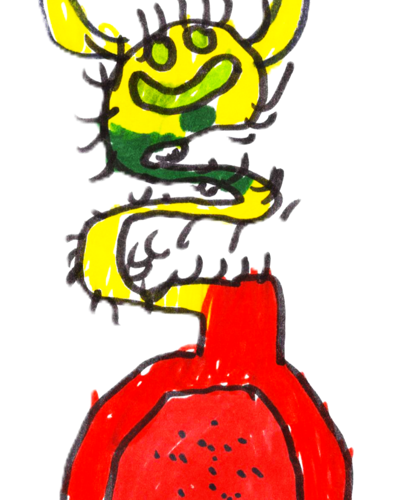
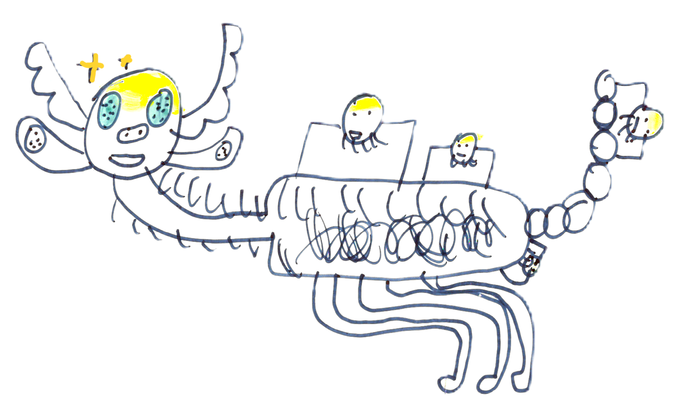

The Moose is one of the strangest Creatures In The RF. It was based off of a real animal, but it was still, not a normal Moose. It requires massive amounts of parasites to balance on its packed together feet,not to mention multi pupilled eyes and massive ears.😃😃🦈